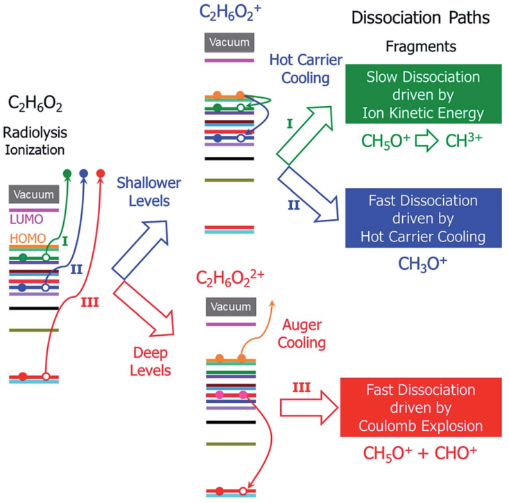

Ultrafast dynamical process
In this section, we will talk about how to calculate the ultrafast dynamics, dynamics in the time scale of ~100fs. It mostly involves carrier dynamics (the movement of electron) resulting in the failure of ground state description. Usually, the ultrafast dynamics involves:
the dynamics after a system suddenly loses an electron (e.g., due to femtosecond laser beam caused ionization);
exciting one electron from valence band to one conduction band state;
a collision of a very fast ion.
PWmat provides two approach to simulate such ultrafast carrier dynamics: real-time time dependent density functional theory (rt-TDDFT) and Non-adiabatic molecular dynamics (NAMD).
The rt-TDDFT method could add oscillating electric field and simulate the initial excitation process. It include both electron-electron and electron-phonon interaction. We have developed a new rt-TDDFT method which could include the detailed balance between states (beyond Ehrenfest dynamics) and the finite dephaseing time (10.1039/c9sc04100a). But the limitation of calculated amount makes rt-TDDFT only good for relatively small system (less than 100 atoms).
NAMD is an approxomation method which ignores the effects of carrier dynamics to nuclear dynamics. And it only include electron-phonon interaction, no electron-electron interaction. But it is a good method for large systems compared to rt-TDDFT. NAMD method based on fewest-swiches surface hopping (FSSH) could not include the detailed balance and finite dephasing time well. So we develop a new NAMD simulation method by modifying the conventional density matrix.
Note: Makesure you have been familiar to basic TDDFT and NAMD calculations in PWmat manual before you undertake this section.
Hot carrier cooling
This module is used to calculate the carrier cooling using rt-TDDFT. Radiolysis is the most common inelastic scattering damage in electron beam illumination caused molecular dissociation and damage. There are at least 3 different processes can be expected:
if the ejected electron level is very shallow and close to the highest occupied molecular orbital (HOMO) level, a hot hole carrier will be formed; it will cool with relaxation of the hole to the HOMO, and the energy will be transformed into nuclear kinetic energy. Because the ejected electron level is very shallow, the energy from the hot hole relaxation will be small and cannot drive dissociation of the molecule in a short time scale. However, both the hot hole relaxation energy and the recoganization energy of the molecule will be converted into nuclear kinetic energy, which can still dissiciate the molecule on a longer time scale;
if the electron is ejected from a level that is slightly lower than the HOMO level, the energy released by hot hole relaxation is higher than in the above situation and will also be converted to nuclear kinetic energy, which may in turn dissociate the molecule;
if the ejected electron level is very deep and much lower than the HOMO level, the lare energy from the hot hole relaxation can induce an Auger process with another electron ejected to the vaccum, causing dissociation of the doubly ionized molecule via Coulomb explosion.
The schematic of the decay processes could be displayed here:
We only discuss the second process in this module. Currently, it is difficult to simulate the Auger process with rt-TDDFT. So we develop an analytical formalism to calculate the Auger cross section with the Fermi-golden rule (details in module xx). The molecule breakdown due to the first process could not be observed during rt-TDDFT simulations as well, we simulate this process by calculating the cross sections of electron ejection on different levels using binary-encounter-dipole (BED) model (details in module xx).
Relaxation
First, we should get a fully relaxed C2H6O2 molecule. Put the molecule in a vaccum box (\(10\angstorm \times 10\angstorm \times 10\angstorm\)):
10
Lattice vector (Angstrom), stress(eV/natom)
0.1000000000E+02 0.0000000000E+00 0.0000000000E+00
0.0000000000E+00 0.1000000000E+02 0.0000000000E+00
0.0000000000E+00 0.0000000000E+00 0.1000000000E+02
Position, move_x, move_y, move_z
6 0.462316818 0.423166921 0.475427054 1 1 1
6 0.539337789 0.527765152 0.397500130 1 1 1
8 0.617516587 0.601419821 0.492659472 1 1 1
8 0.382438827 0.350979141 0.380630566 1 1 1
1 0.533323425 0.356459335 0.527106558 1 1 1
1 0.399467710 0.472759547 0.551334942 1 1 1
1 0.468425336 0.593515516 0.344336363 1 1 1
1 0.603330482 0.478124265 0.322600274 1 1 1
1 0.668467865 0.667709020 0.444165727 1 1 1
1 0.340263077 0.277427533 0.427001981 1 1 1
To screen the false periodic interaction, we use the double box coulomb cut-off by setting ‘COULOMB = 1, 0.0, 0.0, 0.0’ in etot.input:
4 1
job = relax
!input
in.atom = atom.config
in.psp1 = O.SG15.PBE.UPF
in.psp2 = C.SG15.PBE.UPF
in.psp3 = H.SG15.PBE.UPF
!functional
XCFUNCTIONAL=PBE
!relax
relax_detail = 1 50 0.01
!iter
SCF_ITER0_1 = 6 4 3 0.0 0.01 1
SCF_ITER0_2 = 94 4 3 1.0 0.01 1
SCF_ITER1_1 = 40 4 3 1.0 0.01 1
!accurancy
Ecut = 60.0000000000000
Ecut2 = 240
Ecut2L = 240
MP_N123 = 1 1 1 0 0 0 2
WG_ERROR = 1.E-6
E_ERROR = 0
RHO_ERROR = 1.0E-6
COULOMB = 1, 0.0, 0.0, 0.0
!output
OUT.FORCE = T
OUT.WG = F
OUT.RHO = F
SCF
Then do JOB = SCF to get the charge density and wavefunciton:
4 1
job = scf
!input
in.atom = atom.config
in.psp1 = O.SG15.PBE.UPF
in.psp2 = C.SG15.PBE.UPF
in.psp3 = H.SG15.PBE.UPF
!functional
XCFUNCTIONAL=PBE
!iter
SCF_ITER0_1 = 6 4 3 0.0 0.01 1
SCF_ITER0_2 = 94 4 3 1.0 0.01 1
!accurancy
Ecut = 60.0000000000000
Ecut2 = 240
Ecut2L = 240
MP_N123 = 1 1 1 0 0 0 2
WG_ERROR = 1.E-6
E_ERROR = 0
RHO_ERROR = 1.0E-6
COULOMB = 1, 0.0, 0.0, 0.0
!output
OUT.FORCE = F
OUT.WG = T
OUT.RHO = T
rt-TDDFT
Finally, do JOB = TDDFT with several important tags:
IN.OCC = T for occupation, prepare IN.OCC
use TDDFT.BOLTZMANN to turn on the Boltzmann factor
use IN.WG and IN.RHO from the SCF calculation